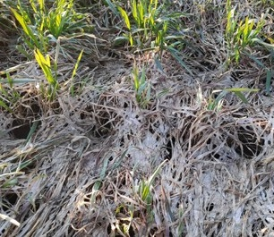

Болезни зерновых колосовых
Снежная плесень (Fusarium mivale)

Описание:
Снежная плесень (Fusarium mivale) - возбудитель снежной плесени. Активно развивается при низких температурах воздуха от 1 до 10 градусов Цельсия.Болезнь проявляется после таяния снега. Инфекция сохраняется на растительных остатках в почве. В течение вегетации возбудитель распространяется конидиями воздушно-капельным путем.
Признаки заболевания/Повреждения:
Развитие снежной плесени происходит ранней весной: возбудитель заболевания сначала проходит фазу конидиального спороношения, а затем формируются сумкоспоры, располагающиеся в нижней части стебля. На этой стадии грибок разносится на соседние растения дождем, ветром и благодаря насекомым. На загнивших листьях, узле кущения нежный паутинистый налет белого или розового цвета. Спороношение имеет вид мелких бледно-розовых или оранжевых подушечек у основания стеблей. На поверхности отмерших листьев образуются бледно-розовые или оранжевые шарообразные плодовые тела диаметром 0,3 мм. Листья часто склеиваются и загнивают. Узел кущения разрушается.
Меры борьбы:
Обработка семян перед посевом протравителем разрешённым на культуре.

Корневые гнили (Fusarium, Helminthosporium)
Описание:
Инфекционное заболевание, вызываемое полупаразитными грибами из родов: Fusarium, Helminthosporium, Cercosporella и др. Инфекционное начало накапливается в почве (особенно при бессменном возделывании зерновых колосовых) на растительных остатках, иногда возможна передача инфекции семенами.
Признаки заболевания/Повреждения:
При благоприятных условиях происходит загнивание, разрушение крорневой и прикорневой части растений или поражается сосудистая система, в результате чего происходят угнетение растений, пожелтение и засыхание листьев, белостебельчатость, белоколосица,задержка колошения, щуплость зерна и пустоколосость, а также гибель продуктивных стеблей.
Меры борьбы:
Профилактика и борьба достигается путём обработки семян перед посевом. Качественное протравливание семян обеспечит надёжную защиту зерновых до фазы кущения.


Мучнистая роса (Erysiphie graminis)
Описание:
Возбудитель - гриб Erysiphe graminis В.С. поражает пшеницу, ячмень, рожь, овёс и дикорастущие злаки. Зимует гриб в клейстотециях на поражённых листьях или в виде мицелия на озимых посевах.
Признаки заболевания/Повреждения:
На листьях, стеблях, а так же колосковых чешуях образуется плотный беловатый, сначала паутинистый, затем мучнистый налёт, состоящий из грибницы и конидиального спороношения.Споры при созревании рассеиваются, вызывая заражение новых листьев. Позднее налёт приобретает грязновато-серый цвет, буреет и на нём появляются тёмно-коричневые или почти чёрные плодовые тела. При созревании споры выбрасываются и заражают всходы озимых колосовых.
В благоприятных условиях (повышенная влажность и тепло) заражение озимой пшеницы и ячменя происходит в фазе формирования третьего листа. Интенсивность развития болезни возрастает на ранних посевах и после стерни, на переросших и загущеныных участках. В апреле месяце, при умеренной влажности и оптимальной температуре воздуха, болезнь возобновляет развитие, поражая новые листья и стебли, особенно на полях расположенных в низинах и на густых посевах. В дальнейшем интенсивность развития усилится , с максимальным поражением в фазы колошение-цветение.Меры борьбы:
На участках, где проявляются симптомы заболевания, необходимо проводить обработки:1)В фазе формирования третьего листа.2)В фазе колошения - до цветения, при выявлении 25% заражённых растений, с 5 %-ной интенсивностью поражения листовой поверхности, одним из фунгицидов разрешённых на культуре. По истечении срока действия ранее использованного препарата и заражении более 25% растений с интенсивностью развития 20%, обработку следует повторить.
Фузариоз (Fusarium graminearum.)

Описание:
Возбудитель - гриб Fusarium graminearum.Широко распространённое заболевание, особенно развивается в условиях тёплой, влажной погоды в период созревания зерновых колосовых.
Признаки заболевания:
На поражённых колосьях сначала происходит побеление(обесцвечивание) колосковых чешуй. Затем на них, у основания образуется розовый или оранжево- красный налёт гриба - его спороношения. Через колосковые чешуи гриб проникает и заражает зёрна, которые при этом приобретают розоватый оттенок, становятся щуплыми, сморщенными, утрачивают блеск, терябт всхожесть или дают ослабленные всходы. Позднее на колосковых чешуях появляется сумчатое спороношение (Gibberella saubinetii Sacc.) в виде чёрных точечных плодовых тел.
Меры борьбы:
Профилактика и борьба достигается путём обработки семян перед посевом. При дождливой погоде с высокой температурой воздуха (выше 25 С), при проявлении первых признаков заболевания, следует провести обработку, начиная с семенных посевов, одним из фунгицидов, рекомендованых против септориоза, разрешённых на культуре.
Чернь колоса (Alternaria alternata, Cladosporium herbarium)
Описание:
Чернь колоса вызывается сапрофитными грибами Alternaria alternata, Cladosporium herbarium. Причиной быстрого развития и распространения заболевания, в период созревания является теплая влажная погода(более 70%).
Признаки заболевания:
Заболевание проявляется в период дозревания пшеницы, особенно на перестоявших хлебах. На колосковых чешуях, колосе и зерне образуется налет спороношения грибов. Гриб A. alternata на колосковых чешуях и зерне (чаще на зародышевой части) вызывает темные пятна с оливковым конидиальным налетом. Поражение семян может быть причиной снижения их всхожести.
Меры борьбы:
Используется профилактическая обработка в фазу окончания колошения – цветения, которая также служит профилактикой защитой от фузариоза колоса.В целях снижения потерь урожая, уборку колосовых необходимо проводить в сжатые сроки.

Гельминтоспориоз ячменя(Helminthosporium sativum)
Описание:
Патоген объединяет 2 формы грибов: Сетчатый(Helminthosporium graminea) и полосатый (Pyrenophora teres) . сетчатая форма вызывает сетчатые округлые пятна. Полосатый выражен темно-коричневыми пятнами овальной, удлиненно эллиптической формы. Оптимальные условия для развития повышенная влажность и тепмпература воздуха 18-20 С
Признаки заболевания:
При поражении растений сетчатой формой на листьях инфекция проявляется в виде узкой, темно-коричневой полоски или овального, серо-белого пятна около середины листовой пластинки. Поражение всходов обуславливает развитием сетчатых пятен и гнили. На листьях взрослых растений сначала появляются мелкие коричневые точки, которые удлиняются в темно-коричневые некротические полоски с небольшим сетчатым рисунком. Со временем, некрозы продолжают увеличиваться вдоль жилок листа, и вокруг них образуется хлорозная желтая кайма. На листовых влагалищах, колосковых чешуйках и остях заболевание проявляется в виде коричневых округлых пятен, полосок и некрозов. При полосатом гельминтоспориозе на листьях и листовых влагалищах появляются темно-коричневые пятна овальной, удлиненнй и веретеновидной формы, окруженные хлоротическими участками. На старых листьях пятна этой формы не удлиняются, как у сетчатой, а лишь увеличивается их количество. На стебле появляются коричневые некротические штрихи. -При поражении в фазе всходы -буреют первичные и вторичные корешки, корневая шейка и нижняя часть стебля, в результате чего происходит угнетение растений, задержка колошения, отмирание продуктивных стеблей и гибель растений.- На поздней стадии колосья покрываются тёмно-бурым бархатистым налётом, зёрна в поражённых колосьях щуплые, с побуревшим зародышем и тёмно-юурыми пятнами.Меры борьбы:
Протравливание семян перед посевом системными фунгицидами. Во время вегетации: 1) На семенных посевах обработку следует проводить при обнаружении первых признаков. 2) Продовольственные- при заражении более 10% растений с интенсивностью развития на листьях 5%, применяя один из фунгицидов разрешённых на культуре.
Септориоз озимых зерновых (Septoria tritici)

Описание:
Признаки заболевания:
Меры борьбы:
Протравливание семян перед посевом системными фунгицидами. Во время вегетации: 1) На семенных посевах обработку следует проводить при обнаружении первых признаков. 2) Продовольственные- при заражении более 10% растений с интенсивностью развития на листьях 5%, применяя один из фунгицидов разрешённых на культуре.